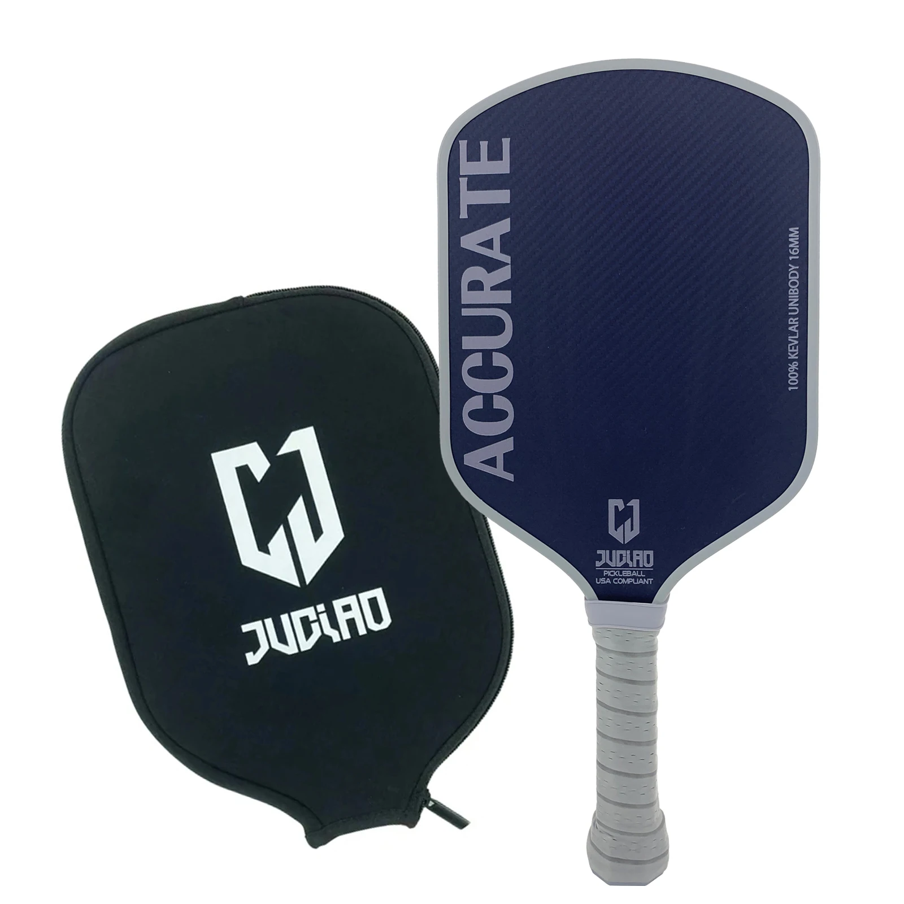
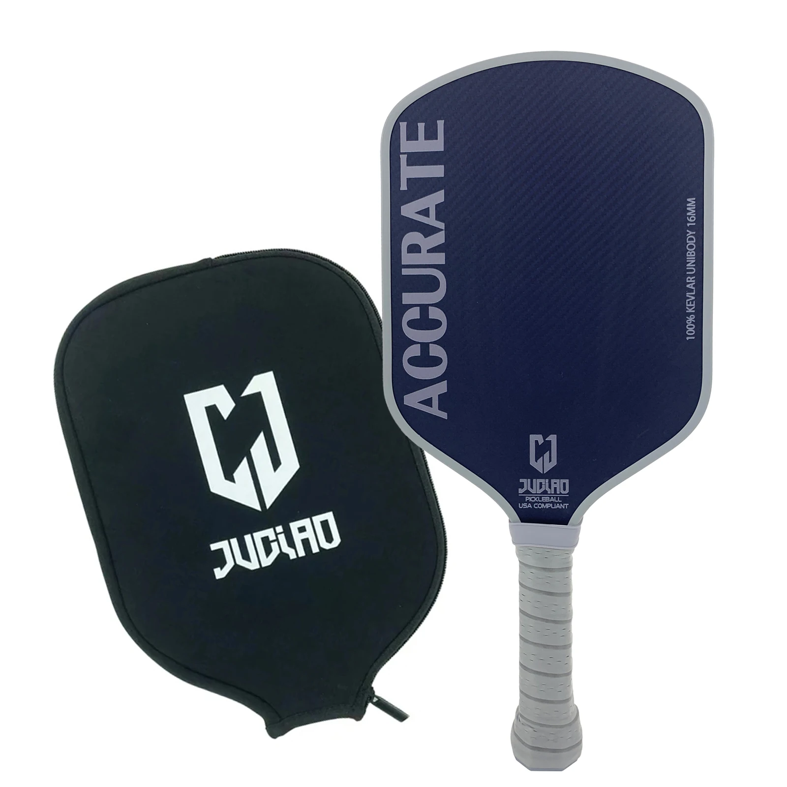

Review: Juciao Accurate Pickleball Paddle
Introduction
The Juciao Accurate Pickleball Paddle stands out for its unique blend of materials and design. This review is based on my hands-on experience and highlights what makes this paddle a great option for players seeking spin, power, and customization.
Product Specifications
- Core Thickness: 16mm Polypropylene Honeycomb
- Face Material: 100% Kevlar
- Shape: Hybrid
- Grip Length: 5.6 inches
- Grip Circumference: 4.3 inches
- Weight: Approximately 8.3 oz
- Dimensions: 16.2” L x 7.55” W
- USAPA Approved: Yes
- Shipping Time: Approximately 9 days to Ontario, Canada
Design and Build Quality
The 100% Kevlar face gives the Juciao Accurate a distinct feel and enhanced durability. The hybrid shape offers a generous sweet spot and balanced playability for a wide range of skill levels.


Performance on the Court
Power and Control
Right out of the box, this paddle delivers excellent pop. Clean contact feels crisp, and it's easy to put balls away. However, off-center hits can result in a loss of control until the paddle is customized.
Spin Generation
The gritty surface is one of the best I've tested for spin. Whether you’re executing topspin drives or crafty slices, this paddle provides great bite on the ball.
Customization and Adjustments
I added two 3-gram lead strips at the 9 and 3 o'clock positions, and this significantly improved stability. For more balance, you could place tape closer to the throat or distribute lighter strips more evenly along the frame.
Community Feedback
The pickleball community has praised this paddle's spin, power, and unique feel. Some users note its dwell time is excellent for defending or resetting hard shots.
Conclusion
If you want a paddle that offers elite spin, solid pop, and customizable performance, the Juciao Accurate is a fantastic value option. Just a few tweaks can make it feel like a high-end paddle with a budget-friendly price.
 

Buy the Juciao Paddle